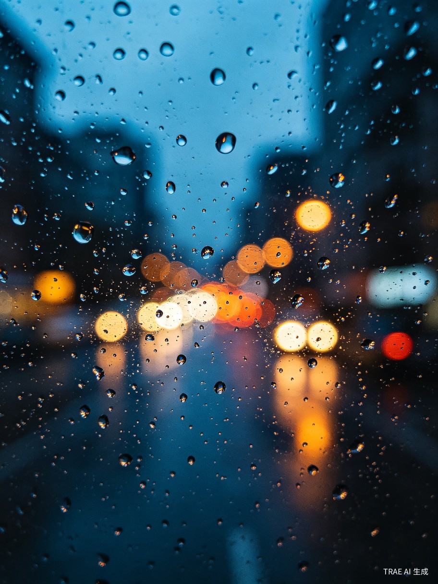

今天
6月28日 · 周日
今天留下了什么？
一张图，一句话，就够了。
正在读取…
0/50
去年的今天
"终于把那本书读完了，在阳台上坐了很久。"
2025年6月20日 · 伴有夕阳的照片
剪报墙
你已积累 8 个瞬间
屏幕的光又亮到很晚。
6月18日
今天慢了一点。
6月15日
今天手感神了。
6月14日
原来我讨厌热闹。
6月10日
这次说开阔。
6月8日

鞋子湿了，但空气很好。
6月5日
终于。
6月3日
今天的光很好看。
6月1日
还没有剪报
每天只写一句话，
这里会慢慢堆成一本属于你的杂志。
这里会慢慢堆成一本属于你的杂志。
六月刊
五月刊
年度特刊
卷首语
六月有 18 天你留下了记录。其中几次在深夜，屏幕的光映在脸上。有几天你没有来，也许那些日子不需要被记住。
精选内页
"屏幕的光又亮到很晚。"
小编注：这个月第三次在深夜记录。
6月18日
"原来我讨厌热闹。"
小编注：和上个月的旅行记录很不一样。
6月10日
"这次说开阔。"
小编注：和去年5月的那张天空，正好一年。
6月8日
主题专栏
这个月你记录了 4 次深夜的屏幕。3 次在 23 点之后，2 次只写了很短的句子。有几次你提到了"终于"。
沉默的角落
这个月有 12 天你没有记录。
也许那些日子不需要被记住，
也许你需要——但我们尊重空白。
也许那些日子不需要被记住，
也许你需要——但我们尊重空白。
跨期回响
去年的5月，你也拍过一张类似的天空。
那次你说压抑，这次你说开阔。
那次你说压抑，这次你说开阔。
本月数据
18
记录天数
4
深夜记录
12
沉默天数
编辑推荐
1
"终于。"
2
"原来我讨厌热闹。"
3
"这次说开阔。"
本月之句
Quote of the Month
"终于。"
6月22日
卷首语
五月有 15 天你留下了记录。你开始频繁出现在咖啡馆，早晨的光变得很重要。你记录了很多天空，却很少提到人。
精选内页
"今天的光很好看。"
小编注：五月你最常出现的场景。
5月20日
"鞋子湿了，但空气很好。"
小编注：五月你记录了 3 场雨。
5月12日
"通关了。"
小编注：只有两个字，但用了感叹号。
5月5日
主题专栏
五月你去了 3 家不同的咖啡馆，都在同一个街区。你开始记录光，而不是人。这是一个转折。
沉默的角落
五月有 16 天你没有记录。
比四月多了 4 天。
也许是因为春天的尾巴让人分心。
比四月多了 4 天。
也许是因为春天的尾巴让人分心。
跨期回响
四月的雨天你也拍过。
那次你说烦，这次你说空气很好。
那次你说烦，这次你说空气很好。
本月数据
15
记录天数
3
咖啡馆
16
沉默天数
编辑推荐
1
"通关了。"
2
"今天的光很好看。"
3
"鞋子湿了，但空气很好。"
本月之句
Quote of the Month
"通关了。"
5月5日
年度卷首
这一年，你记录了 142 天。从一月的第一场雪，到十二月的最后一杯咖啡。你写下的最短句子只有两个字，最长的像一封信。有些月份很沉默，有些月份你几乎每天都在说些什么。这是你的年度特刊。
年度关键词
1
深夜
23 次
2
光
18 次
3
终于
11 次
4
咖啡
9 次
5
空
7 次
四季回顾
春
你开始记录光。三月拍了 8 张天空，四月突然安静了。
38 条记录
夏
深夜变多了。你说"终于"的那几次，都在六月。
47 条记录
秋
你开始写更长的句子。十月有一条像信，写给不知道谁。
35 条记录
冬
你回到了咖啡。十二月最后一条是"今年也没白过"。
22 条记录
年度精选
"这次说开阔。"
小编注：和去年同一天，隔着整年。
6月8日
"屏幕的光又亮到很晚。"
小编注：年度第 23 次深夜记录。
6月18日
"今年也没白过。"
小编注：年度最后一条。
12月31日
沉默的月份
这一年有 4 个月你几乎消失了。
二月、四月、九月、十一月。
也许那些日子不需要被记住，
也许你需要——但年度特刊尊重空白。
二月、四月、九月、十一月。
也许那些日子不需要被记住，
也许你需要——但年度特刊尊重空白。
跨年回响
去年六月，你也拍过一张类似的天空。
那次你说压抑，今年你说开阔。一年之间，同一片天空变了意思。
那次你说压抑，今年你说开阔。一年之间，同一片天空变了意思。
年度数据
142
总记录数
23
深夜记录
8
月份有记录
4
沉默月份
年度之句
Quote of the Year
"这次说开阔。"
6月8日 · 和去年隔着整年
编辑后记
这本年度特刊由 142 个瞬间组成。每一页都是你选择记住的那一天。我们没有替你补充任何文字，只是把它们按时间排列，像一条河流的截面。明年见。
还没有杂志
你的第一条记录，
会成为这本杂志的封面。
会成为这本杂志的封面。
还没有记录可以回忆。
先去记录一个瞬间吧。
先去记录一个瞬间吧。
回响
有一些过去，已经可以被重新翻开。
还有 2 期未读旧刊
去年的今天
"终于把那本书读完了，在阳台上坐了很久。"
2025年6月20日
主题回响
这让你想起了3月的一个深夜。
相似主题：深夜 · 屏幕
去年5月，你也拍过一张天空。
相似主题：天空 · 转折
你似乎喜欢在早晨记录"慢"。
隐性模式：重复 · 早晨
还没有回响
记录得越多，
过去的自己就越有话想对你说。
过去的自己就越有话想对你说。
同一天
把我们各自记住的同一段生活，并排编辑成一本共同杂志。
每个人保留自己的私人记录。只把主动选择的瞬间放入同一天。AI 不合并感受，只把不同视角并排排版。
6月10日 · 旅行
你
14:32
"终于到站了。"
车站 · 拥挤
Ta
14:35
"这段路还挺好看。"
路边 · 安静
主编注
同一天，你们记住了抵达，也记住了路边。
+ 邀请一个人，开始你们的同一天